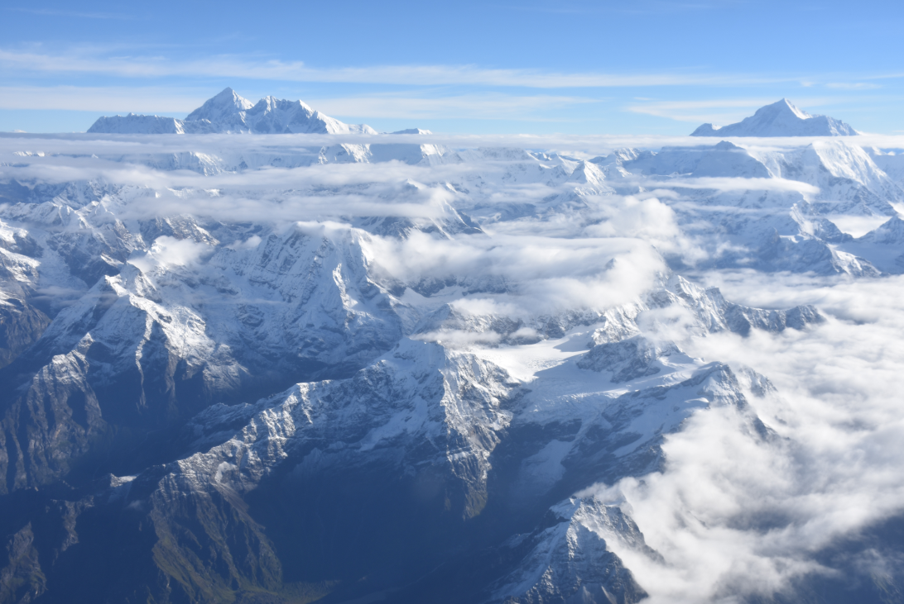
De himalayas
Gebergte in Azië
BeschrijvingDe Himalaya, ook wel Himalayagebergte of Himalaya's genoemd, is een gebergte in het midden van Azië. De Himalaya vormt de scheiding tussen de hoogvlakten van het Tibetaans Plateau in het noorden en de riviervlaktes van het Indisch Subcontinent in het zuiden.
Congo
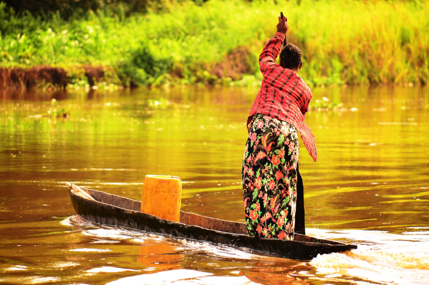
Congo, officieel de Democratische Republiek Congo, kortweg DRC, is een land in centraal Afrika. Ter onderscheiding van het gelijknamige buurland wordt de naam van de hoofdstad Kinshasa aan de naam van het land toegevoegd als Congo-Kinshasa
Mongolië
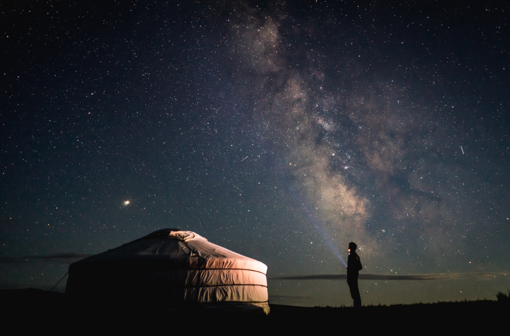
Mongolië is een land in Centraal- en Oost-Azië. Het land grenst in het noorden aan de autonome republieken Altaj, Toeva en Boerjatië, alle lid van de Russische Federatie.
Dagestan
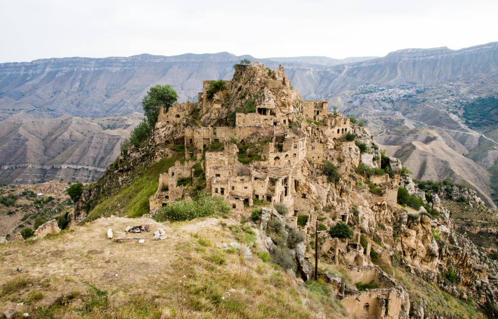
Dagestan is een autonome republiek van de Russische Federatie, gelegen aan de Kaspische Zee, in de Kaukasus. De hoofdstad is Machatsjkala en Dagestan heeft 2.576.531 inwoners en is met z'n 50.300 km² net iets groter dan Nederland.
Machu Picchu
Machu Picchu
is een ruïnestad van de Inca's in Peru. In de 16e eeuw is Machu Picchu verlaten om in 1866 herontdekt te worden. Er is in de ruïnes nog veel van de Incabeschaving terug te vinden.
Nieuw-Zeeland
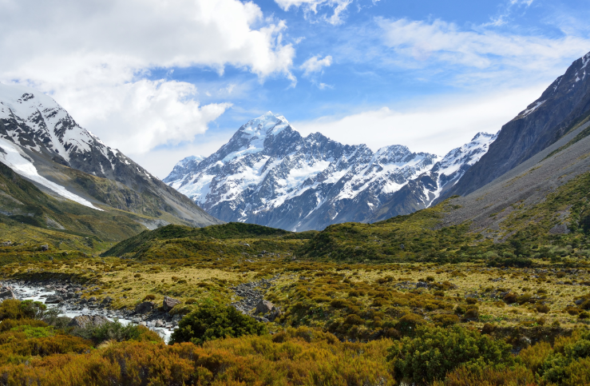
Nieuw-Zeeland is een land in het zuidwesten van de Grote Oceaan. Het bestaat uit twee grote eilanden en een aantal kleinere eilanden. Nieuw-Zeeland is een constitutionele monarchie, lid van het Gemenebest van Naties. Daarmee is Elizabeth II het staatshoofd. Zij wordt vertegenwoordigd door een gouverneur-generaal.
Leiden
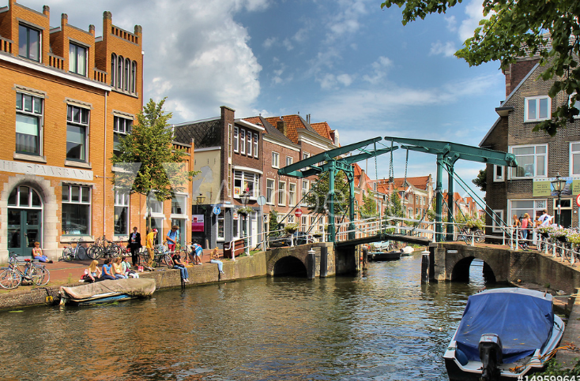
Leiden is een stad en gemeente in de Nederlandse provincie Zuid-Holland. Met 124.899 inwoners is Leiden, naar inwoneraantal gemeten, na Rotterdam en Den Haag en Zoetermeer de vierde gemeente van Zuid-Holland.
Rio de Janeiro
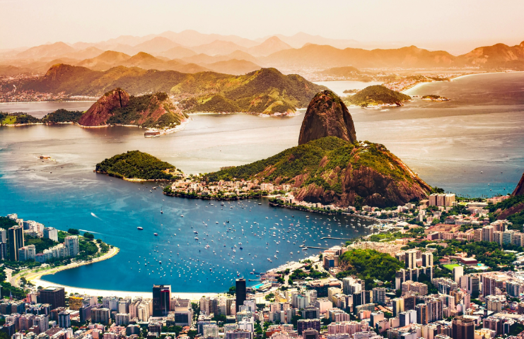
Rio de Janeiro, São Sebastião do Rio de Janeiro of kortweg Rio is een Braziliaanse gemeente en de hoofdstad van de gelijknamige deelstaat in het zuidoosten van het land. De stad ligt aan een wijde baai, de Baai van Guanabara, en was tot 1960 de hoofdstad van Brazilië.
Yellowstone
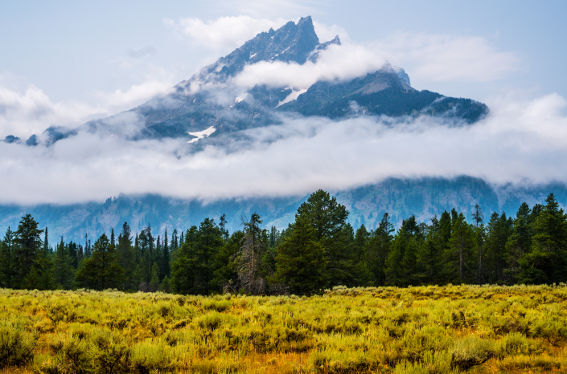
Yellowstone National Park is een nationaal park in de Verenigde Staten, hoofdzakelijk in Wyoming, maar met kleine gedeeltes in de aangrenzende staten Montana en Idaho. Yellowstone heeft een oppervlakte van 8983 km², waardoor het meteen ook een van de grootste nationale parken van de Verenigde Staten is. De gemiddelde hoogte in het park is 2440 meter. Het grootste gedeelte van het park bestaat in Wyoming uit bos.
Texel
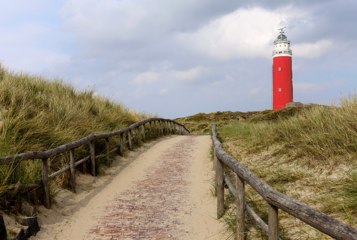
Texel is een eiland van de kust van nederland. Het vormt een deel van de waddeneilanden en is het grootste eiland in nederland. Texel is het enige eiland dat deel uitmaakt van Noord-Holland in plaats van Friesland.
Moskou
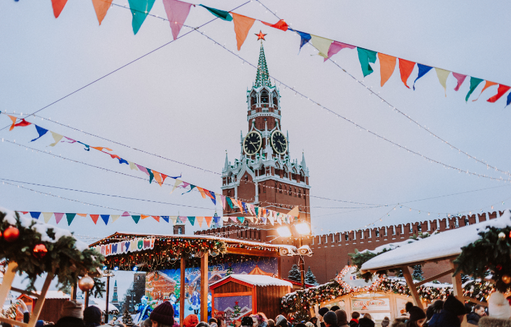
Moskou is de hoofdstad en met afstand de grootste stad van Rusland, voorheen van de Sovjet-Unie. Moskou had op 1 januari 2018 12.506.468 inwoners, die Moskovieten worden genoemd.
Marseille
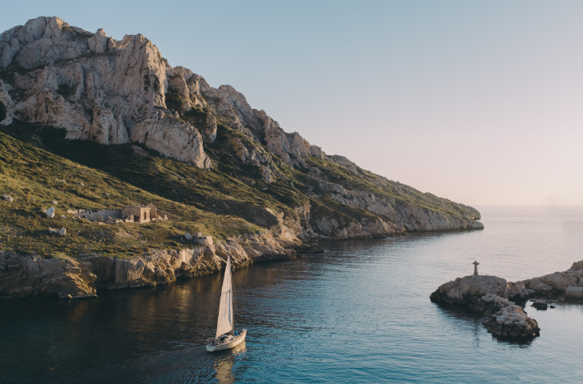
Marseille is, na Parijs, de tweede stad naar inwoneraantal van Frankrijk. Marseille is de hoofdstad van de regio Provence-Alpes-Côte d'Azur en de hoofdstad van het departement Bouches-du-Rhône. Het heeft de grootste handelshaven van Frankrijk.